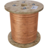

Both models have played the first three SaveBench milestones. For each one, this page sets a run of each model side by side, with what the game itself counted as made by their machines, reply by reply.
One run each is not enough to rank the models. The page shows what happened in these runs and nothing more. Every number comes from the run records.
Claude Opus 5.5, solid line
GPT-6.1 Sol, dashed line
Claude Opus 5.5
4 of 4milestones earned in the runs shown here: 1-1, 1-2, 1-3, 2-1
GPT-6.1 Sol
2 of 3milestones earned in the runs shown here: 1-1, 1-2, 1-3
Milestone 1-1 · Base Building
Goal, made by machines: 200 Concrete100 Iron Plate100 Iron Rod
Claude Opus 5.5 ✓ Earned
The game counted the whole goal as machine-made at reply 9, then it paid for the milestone.
GPT-6.1 Sol ✓ Earned
The game counted the whole goal as machine-made at reply 43, then it paid for the milestone.
How much of the goal the game counted as machine-made after each reply. Solid line: Opus 5.5. Dashed line: Sol. A dot marks the reply where the goal was complete. Point at the lines for the value at each reply.All the numbers for this milestone
Bold marks the better value where lower is better.
Goal, made by machines: 150 Iron Plate150 Iron Rod

300 Wire
Claude Opus 5.5 ✓ Earned
The game counted the whole goal as machine-made at reply 12, then it paid for the milestone.
GPT-6.1 Sol ✓ Earned
The game counted the whole goal as machine-made at reply 81, then it paid for the milestone.
How much of the goal the game counted as machine-made after each reply. Solid line: Opus 5.5. Dashed line: Sol. A dot marks the reply where the goal was complete. Point at the lines for the value at each reply.All the numbers for this milestone
Bold marks the better value where lower is better.
Goal, made by machines: 300 Wire300 Screws100 Iron Plate
Claude Opus 5.5 ✓ Earned
The game counted the whole goal as machine-made at reply 31, then it paid for the milestone.
GPT-6.1 Sol Not earned
Its time ran out with 140 of 300 Screws made.
How much of the goal the game counted as machine-made after each reply. Solid line: Opus 5.5. Dashed line: Sol. A dot marks the reply where the goal was complete. Point at the lines for the value at each reply.All the numbers for this milestone
Bold marks the better value where lower is better.
How the two played is part of the story. Opus 5.5 asked for several moves in each reply. Sol asked for one move at a time, so it needed more replies for the same work. "Run length" is the time from the start of a run to its end.